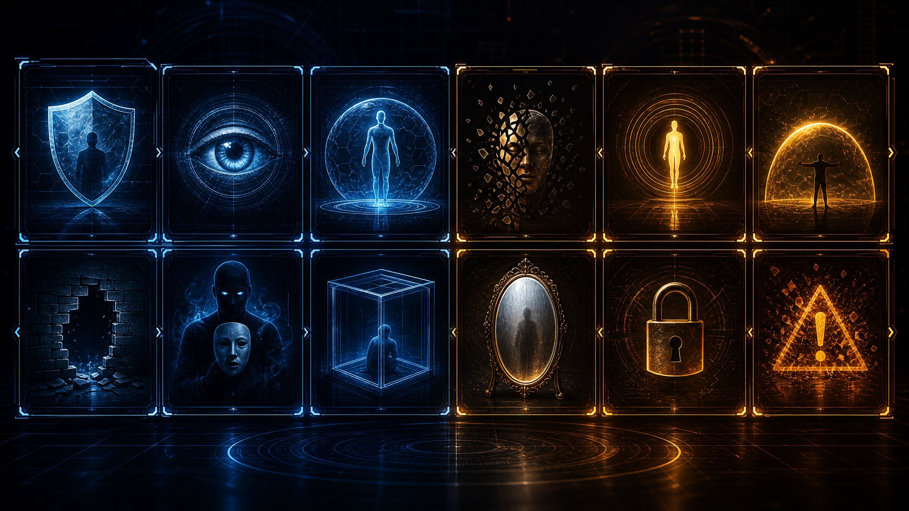
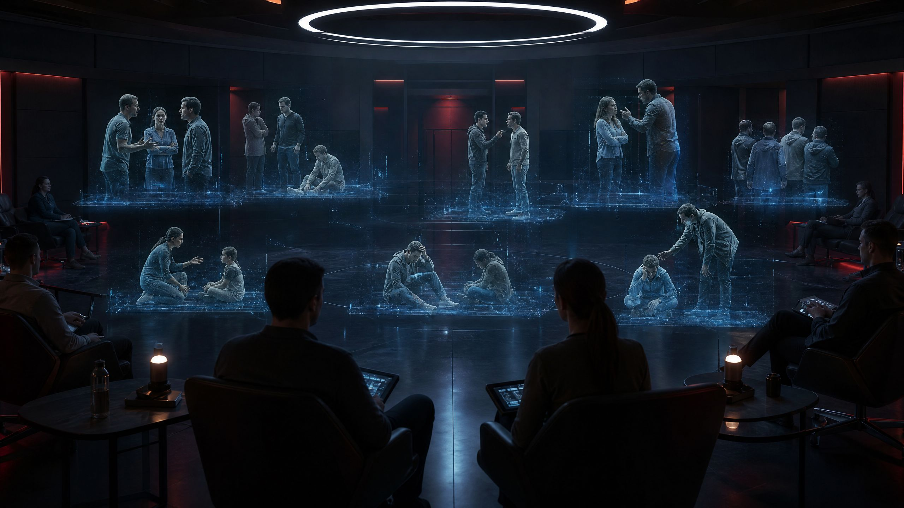

Sistema de Maestría Estratégica
Autor: Benedict Goleman
Domina la Psicología Estratégica en Tiempo Récord
Transforma más de 440 páginas del compendio de Benedict Goleman en habilidades prácticas: lee intenciones ocultas, neutraliza ataques psicológicos y reprograma tus patrones mentales con base científica.
Repetición espaciada
Toma de decisiones
Evaluación diagnóstica
Los 6 Libros del Compendio
Selecciona un libro para estudiarAcademia de Dominio: Ruta de 0 a 100
El cerebro aprende mediante Fragmentación (Chunking), Anclaje Contextual y Divulgación Progresiva. Esta ruta está bloqueada secuencialmente. Absorbe, procesa y asimila un pilar a la vez.

Matriz de Detección & Escudos de Defensa
20 Fichas tácticas: Mecanismo de ataque, Red Flags y Guión de contraataque exacto.

Escenarios Tácticos 8 Casos
Laboratorio No Verbal & Detección de Falsedad
Entrenador visual de microexpresiones, gestos pacificadores, patrones oculares y detección de incongruencias.
Flashcards de Repetición Espaciada
Fija los conceptos clave en tu memoria a largo plazo mediante recuerdo activo.
Cargando pregunta...
Cargando respuesta...
Centro de Evaluación Diagnóstica
Mide tu nivel de retención con preguntas estratégicas y retroalimentación inmediata.
Certificado de Maestría Táctica
Genera y descarga tu acreditación oficial de habilidades en Psicología Oscura y Defensa Conductual.
Glosario Táctico & Hoja de Resumen (Cheat-Sheet)
Diccionario estratégico con todos los conceptos nucleares de la obra de Benedict Goleman.
Árbol de Habilidades Tácticas (RPG)
Desbloquea nuevas capacidades cognitivas a medida que dominas los conceptos. Las herramientas avanzadas están bloqueadas hasta que domines lo básico.
Sparring Táctico (IA Generativa)
Simulador de chat en tiempo real. Enfréntate a un perfil maquiavélico y pon a prueba tu capacidad de aplicar la Roca Gris y desarmar el Gaslighting.
Ah, has decidido entrar. Te advierto que aquí no hay reglas justas. Intenta usar tus técnicas de "Roca Gris" o "Desvío" conmigo. Habla o escribe cuando estés listo.
Laboratorio Táctico Interactivo
Pon a prueba los conceptos con modelos matemáticos, simuladores ramificados y mapas de calor.
Reatribución Matemática de la Culpa
Ingresa los factores de una situación donde te sientes culpable. Ajusta los pesos para ver tu responsabilidad real (idealmente < 10%).
Analizador de Tríada Oscura
Evalúa a una persona respondiendo 3 preguntas clave. El radar mostrará su peligrosidad psicológica.
Termómetro de Tensión (Cortisol)
Simula una conversación y observa cómo los "Gestos Pacificadores" o las "Tácticas Agresivas" alteran la bioquímica en tiempo real.
Constructor de Escudos (Drag & Drop)
Arma tu respuesta frente a este ataque arrastrando los bloques correctos al escudo. Evita justificarte.
"Espero que puedas quedarte hasta las 9pm hoy, porque si no entregas esto a tiempo, todo el equipo va a quedar mal por tu culpa frente al cliente."
Arsenal (Opciones)
Tu Escudo de Respuesta
Mapas de Calor (Análisis de Gestos)
Haz clic en la zona del cuerpo que revela la mentira o el estrés (basado en la Línea Base).
Diccionario Multimedia (API Placeholder)
Conexión lista para Giphy/Pexels API. Ilustra los gestos en movimiento.
Auditor Forense de Comunicaciones
Pega un correo, mensaje de texto o de WhatsApp sospechoso. La IA desglosará las tácticas manipulativas ocultas y te dará el escudo exacto para responder.
Esperando datos para análisis táctico...
Tracker Biométrico (Visión Artificial)
Activa tu cámara para monitorear tu nivel de estrés o realizar pruebas de detección de mentiras en tiempo real. Todo el procesamiento se hace offline en tu navegador.
¿Por qué el contenido está bloqueado?
Configurador de Voz Neural
Detectamos automáticamente todas las voces naturales instaladas en tu navegador y sistema operativo.